归档说明：本文是原项目报告的公开归档版；数值与结论未改，仅将本机绝对路径替换为占位符、把图片指向本仓库reports/accuracy_figures/。原文中未随包迁移的内部 CSV/目录链接可能失效；可复现数据以data/与docs/08_文件与证据索引.md为准。
三相LCC谐振变换器HOGA、EDF与FHA模型精度对比及误差分析
研究报告｜2026年10月24日｜50 V输入、100–800 V冻结输出、240–320 kHz离散工况
摘要
本报告利用已完成的三相 Δ/Y LCC 模型审计及数值计算，比较事件增强高阶广义平均模型（HOGA）、扩展描述函数模型（EDF）和基波近似模型（FHA）的稳态预测精度。证据包括20个工况、四种方法的80条最终有效记录，28个HOGA阶数实验点，四个工况的独立参考精化与H31验收，以及100、400、800 V下的三点Simulink详细开关模型验证。本次只读取已保存结果、补充统计和绘图，未重新求解数学模型、运行Simulink或修改SLX。
在三种模型与独立事件ODE共同有效的16个CCM工况中，HOGA、EDF、FHA的平均输出电流绝对误差分别为 15.579 μA、4.284 mA、90.874 mA，三相RMS平均绝对误差分别为 0.159 mA、32.659 mA、0.924 A，三相峰值平均绝对误差分别为 4.838 mA、0.125 A、1.367 A。固定电流基值下的合并波形NRMSE分别为 0.05664%、1.90564%、22.20782%。另外四个非CCM工况保留并单列，其中两个为输出电流为零的全截止周期代表解。
本数据支持事件增强HOGA具有明显的整体精度优势，但不支持逐点、逐指标的无条件优势：100 V/260 kHz处EDF峰值误差更小，400 V/300 kHz处FHA平均输出电流误差小于EDF。升阶也不保证每一项误差单调下降。HOGA的优势来自多谐波电流与整流事件的一致闭合；仅增加谐波数、仅满足代数残差或仅比较一个平均量，均不足以证明模型更准确。其适合用于已验证范围内的应力精化和参数筛选，但实际器件开关损耗、死区换流、全谐波磁件损耗及完整充电优化仍需要进一步验证。
关键词： 三相LCC；高阶广义平均；扩展描述函数；基波近似；整流事件；模型验证；电流应力
第一章 研究目的与模型概述
1.1 研究对象和问题
研究对象为三桥臂120°移相驱动、各馈线串联 $L_s$–$C_s$、原边及并联电容为Δ连接、副边为浮动Y连接、共用六二极管整流桥的LCC谐振变换器。三相电流经Δ/Y网络耦合，不能将三个独立单相结果相加得到本电路。输出电压在每个工况内固定，研究的是局部周期稳态端口特性，不是从零初态开始的电容充电轨迹。
本报告回答三个问题：平均传能特性是否准确；RMS、峰值和波形是否足以描述电流应力；增加模型复杂度能否带来与用途相匹配的收益。比较对象是本工程的具体实现，不能由名称相同推断其他HOGA、EDF或FHA实现具有相同精度。
源依据为拓扑及假设、HOGA审计、EDF推导和FHA推导。历史教学文档《三相LCC电容充电电源_HOGA完整建模推导》包含“三路独立整流桥、分段电容串联”假设，与本次共用六管桥不同，不能把其中整流闭合和动态结论直接移植到本报告。论文方法背景与当前电路推导、数值验证分别对待；未核对全文的外部文献不承担本报告定量结论。
1.2 共同物理方程和参考方向
令 $\boldsymbol i$ 为逆变器流向三条谐振馈线的电流，$\boldsymbol v_s$ 为串联电容沿馈线的压降，$\boldsymbol u$ 为Δ边原边电压，$\boldsymbol e=n\boldsymbol u$ 为副边相对浮动中性点电压，$\boldsymbol j$ 为副边流向整流桥的电流，$n=N_s/N_p=4$。定义
$$ B=\begin{bmatrix}1&0&-1\\-1&1&0\\0&-1&1\end{bmatrix},\qquad U=\begin{bmatrix}1/\sqrt2&1/\sqrt6\\-1/\sqrt2&1/\sqrt6\\0&-2/\sqrt6\end{bmatrix},\qquad C=U^{\mathsf T}BU. \tag{1-1} $$
端口关系为 $\boldsymbol u=B^{\mathsf T}\boldsymbol v_x$、$\boldsymbol i=B(n\boldsymbol j+C_p\dot{\boldsymbol u})$。取 $\boldsymbol i=Uq$、$\boldsymbol v_s=Us+b\boldsymbol1$、$\boldsymbol e=Ur$、$\boldsymbol j=Uw$，公共电荷偏置 $b$ 为守恒量，本研究选 $b=0$。六个独立差模物理状态为 $x=[q^{\mathsf T},s^{\mathsf T},r^{\mathsf T}]^{\mathsf T}$，共同方程为
$$ \begin{aligned} L_s\dot q&=V_{in}p-R_{in}pp^{\mathsf T}q-s-\frac{Cr}{3n},\\ C_s\dot s&=q,\\ \frac{C_p}{n^2}\dot r&=\frac{C^{\mathsf T}q}{3n}-w,\qquad p=U^{\mathsf T}d. \end{aligned}\tag{1-2} $$
$d$ 为三个上管门控，$R_{in}$ 为共用母线电阻；$pp^{\mathsf T}$包含跨相项。平衡节点等效并联电容是 $3C_p$，不能误用单个Δ边的 $C_p$。六管桥允许两管、三管和全截止区间。记 $V_d=V_o+2V_f$，以 $A$ 的六行为 $U_a-U_b$（$a\ne b$），整流约束为
$$ K=\{r:Ar\le V_d\boldsymbol1\},\qquad w\in N_K(r),\qquad i_o=\sum_a\max(j_a,0)=\frac12\sum_a|j_a|. \tag{1-3} $$
最后一个等式要求零和电流及二极管可行性成立；不能把任意候选的绝对值和直接当成合法整流电流。法锥条件同时表达钳位、非负反作用电流和互补约束。
周期平均能量关系提供独立物理核验：
$$ W=\frac{L_s\|q\|^2}{2}+\frac{C_s\|s\|^2}{2}+\frac{C_p\|r\|^2}{2n^2},\qquad V_{in}\overline{i_{dc}}=(V_o+2V_f)I_o+R_{in}\overline{i_{dc}^2},\quad i_{dc}=d^{\mathsf T}\boldsymbol i. \tag{1-4} $$
功率闭合是必要自检，不是与真实电路一致的充分条件；近似模型也可能在自身假设下严格守恒。
1.3 HOGA：多谐波电流与整流事件闭合
HOGA使用复Fourier系数，固定频率稳态下
$$ x(t)=\sum_{h=-H}^{H}X_h e^{jh\omega_s t},\quad X_{-h}=\overline{X_h},\quad \langle\dot x\rangle_h=\dot X_h+jh\omega_sX_h,\quad \langle ax\rangle_h=\sum_\ell A_{h-\ell}X_\ell. \tag{1-5} $$
本次求解 $\dot X_h=0$ 的冻结平衡，未验证移动窗口大信号动态。电流 $q$ 保留 $\pm1,\ldots,\pm H$ 阶，$Q_0=0$ 来自串联电容周期性；$s$ 的非零阶由积分获得，DC电压与整流事件共同闭合。$pp^{\mathsf T}$按最高 $\pm2H$ 阶计算以形成截断卷积。
当前V2.3并非对所有非线性波形作同样的有限阶截断。 谐振电流为有限Fourier多项式，副边电压按实际活动面分段精确积分；事件时刻、初始电压和电流系数联合满足触边、释放、周期性与谱方程。模式假设来自HOGA自身的发现和延续，不使用独立ODE轨道来拟合。模型允许电压导数和二极管电流在换向处改变。
正阶峰值幅度为 $2|X_h|$，Parseval关系为
$$ x_{\mathrm{rms}}^2=|X_0|^2+2\sum_{h=1}^{H}|X_h|^2.\tag{1-6} $$
提高 $H$ 增强电流波形的表示能力，但不能自动修复错误导通次序、负二极管反作用、遗漏的寄生或错误参数。历史legacy候选在400 V/H31时谱残差约 $6.53\times10^{-11}$ V，法锥偏差仍约5.65 V、功率偏差2.185%，已被拒绝。这说明本研究的关键区别包括整流事件的物理一致性，不只是阶数大小。
1.4 EDF：保留非线性整流，限制电流为基波
采用峰值相量 $x(\theta)=\operatorname{Re}(\hat x e^{j\theta})$，$\hat x=x_c-jx_s=2X_1$。平衡三相电流为 $\hat{\boldsymbol i}=I[1,e^{j2\pi/3},e^{j4\pi/3}]^{\mathsf T}$。其基波包络方程为
$$ \begin{aligned} L_s(\dot Q+j\omega_sQ)&=V_{in}\hat p-R_{in}(M_0Q+M_2\overline Q)-S-\frac{CR}{3n},\\ C_s(\dot S+j\omega_sS)&=Q,\\ R&=\mathcal D(Q,V_o,\omega_s),\qquad I_o=\mathcal D_0(Q,V_o,\omega_s). \end{aligned}\tag{1-7} $$
$Q,S$ 各为两个复差模坐标，共8个实包络坐标。$M_0,M_2$来自真实门控乘积投影。描述函数使用正弦电流强迫 $C_p$–六管桥子系统，保留一周期内的充放电记忆、两管/三管/截止区间，解析求触边与释放事件，然后提取电压基波及输出电流直流项：
$$ \hat{\boldsymbol e}=\frac1\pi\int_0^{2\pi}\boldsymbol e(\theta)e^{-j\theta}\,d\theta,\qquad I_o=\frac1{2\pi}\int_0^{2\pi}\sum_a\max(j_a(\theta),0)\,d\theta. \tag{1-8} $$
其缺失环节是高阶端口电压对高阶谐振电流的反馈，而非完全删除整流非线性。平衡稳态可化为电流幅相的两个实未知；实际代码进一步消去相位，搜索幅值根，在40个对数搜索节点发现符号变化区间，并选择最小正幅值根。此过程不证明全局唯一性或分支稳定性。$C_p$没有独立慢包络状态，快速变频和 $C_o\dot V_o=I_o-I_{load}$ 耦合动态尚未验证。
1.5 FHA：基波电流与简化整流端口
FHA令副边电流为平衡正弦，忽略真实换流窗口，以符号电流决定六阶梯钳位电压。由端口关系可得
$$ E_{sec,pk}=\frac{2V_d}{\pi},\qquad I_o=\frac{3J_{pk}}{\pi},\qquad R_{ac}=\frac{6V_d}{\pi^2 I_o},\qquad Y_{node}=3n^2G+j\omega_s3C_p,\quad G=1/R_{ac}. \tag{1-9} $$
$R_{ac}$随工况求解，不能视为预设常量。相A驱动基波为 $E=2V_{in}/(j\pi)$，而非单相全桥的幅值。保留共用 $R_{in}$ 的基波耦合后，模型求一个实导纳根 $G\ge0$，使副边基波达到式(1-9)的钳位幅值。不存在导通根时返回 $G=I_o=0$ 和 NO_CONDUCTING_FHA_ROOT；这只是FHA自身的分支判断，不构成真实电路全截止证明。
表1-1 模型方法、状态和可信输出比较
| 项目 | HOGA（当前V2.3/H31） | EDF（本工程独立实现） | FHA（本工程独立实现） |
|---|---|---|---|
| 共同物理对象 | 六维差模LCC与共用六管桥 | 相同拓扑、参数和参考方向 | 相同拓扑、参数和参考方向 |
| 主要数学表示 | 多阶电流Fourier系数、分段电压积分、事件方程 | 基波电流/Cs包络与带周期记忆描述函数 | 稳态基波阻抗与导纳代数根 |
| 保留电流谐波 | $\pm1\ldots\pm31$；对称性使部分系数为零 | 仅 $\pm1$ | 仅 $\pm1$ |
| 状态/未知规模 | 物理状态6；本扫描消元前Fourier/DC/事件坐标126–138 | 8实包络坐标；平衡稳态2实未知，可消成幅值根 | 无动态状态；1个实导纳未知 |
| 整流器处理 | 六面互补、事件位置与多谐波共同闭合 | 正弦电流强迫下的六面事件积分 | 六阶梯端口与基波功率等效 |
| 整流非正弦波形 | 保留分段表示 | 保留，但受正弦强迫假设限制 | 不可靠；纹波和截止比例返回NaN |
| RMS/峰值输出 | 多谐波RMS与连续Fourier峰值 | $\lvert I\rvert/\sqrt2$、$\lvert I\rvert$，仅正弦重构值 | $\lvert I\rvert/\sqrt2$、$\lvert I\rvert$，仅正弦重构值 |
| 主要适用边界 | 本次理想化冻结周期；分支须验收 | 准静态基波响应；快速动态未验证 | 粗略基波筛选；换流与波形应力有限 |
状态数量的定义不同，不能用126与8或1直接推导算力比。EDF与HOGA在H1下可以接近同一个近似解；二者的代码独立性与理论联系并不矛盾。
第二章 验证平台与评价标准
2.1 电路参数、模型来源和扫描范围
表2-1 共同电路参数与数值比较口径
| 量 | 取值/说明 |
|---|---|
| 输入电压 $V_{in}$ | 50 V |
| 串联电感 $L_s$ | 每馈线4.7 μH |
| 串联电容 $C_s$ | 每馈线135 nF |
| 并联电容 $C_p$ | 每Δ边27 nF；节点平衡等效81 nF |
| 变比 $n=N_s/N_p$ | 4，单绕组变比 |
| 共用输入电阻 $R_{in}$ | 1 mΩ |
| 整流二极管恒压降 $V_f$ | 0.6 V/只；桥端电压 $V_d=V_o+1.2$ V |
| 实际输出电容 | 两只6.25 μF串联，等效3.125 μF；冻结比较不积分充电电压 |
| 驱动 | 三桥臂互补，零死区；上管正相移0/+120/+240° |
| 电压扫描 | 280 kHz下100、200、…、800 V，共8点 |
| 频率扫描 | 100、400、800 V下240、260、280、300、320 kHz；去除重复后总计20点 |
| 典型Simulink点 | 280 kHz下100、400、800 V，共3点；各有coarse/fine结果 |
| 未覆盖 | 0–100 V启动、任意连续频率/电压、参数失配、真实器件和充电动态 |
model_config.m是比较参数入口。实际拓扑审计来自 MATLAB_PRJ/three_phase/simulink/three_phase_LCC.slx。已保存的Simulink数据来自固定输出比较模型，其构建脚本沿用既有 lcc3_ideal_charge.slx 近理想副本，将输出电容替换为两个 $V_o/2$ 电压源，并增加电压日志；并非本次新搭建模型。
本次另只读核对了用户指定的 MATLAB_PRJ/three_phase/simulink/ideal_three_phase_LCC.slx：初始化中的Vin、Ls、Cs、Cp、fs、n与表2-1一致，但二极管SID273的 Vf=eps，而本次数学基准为0.6 V；其输出仍为电容充电结构。文件名“ideal”不代表它已满足本次全部比较条件，也不能将此前三点结果归属到该文件。 本次复用已经对齐参数的有效数据，无需修改或重跑该SLX。今后若进一步对齐或验证，应在此既有模型上设置共同Vf、冻结输出、初态、测量与数值正则化，不重新搭建电路。只读参数及哈希见核对记录。
2.2 独立事件ODE与Simulink的证据层级
独立事件ODE直接积分六维物理状态，通过六面KKT/二极管事件切换和周期射击寻找周期轨道。它不接受HOGA轨道、谐波或事件作为答案。20点主参考使用 RelTol=1e-10、AbsTol=1e-11、最大步长 $T/384$，保存16384点周期采样，统一比较时映射到8192点。它与HOGA共享物理假设，独立的是求解与轨道构造，不能把它称作实验真值。
Simulink/Simscape直接求电气元件网络及开关约束，保留微小电阻和漏电导以正则化数值问题。两档设置为：
表2-2 详细开关模型求解和后处理条件
| 条件 | coarse | fine |
|---|---|---|
| 求解器 | ode15s、变步长 | ode15s、变步长 |
| 最大步长 | $T/250$，约14.286 ns | $T/500$，约7.143 ns |
| 仿真长度 | 32周期 | 64周期 |
| 元件数值电阻 | $10^{-6}$ Ω | $10^{-7}$ Ω |
| 关断/数值电导 | $10^{-11}$ S | $10^{-12}$ S |
| 相对/绝对容差 | $2\times10^{-7}/2\times10^{-9}$ | 相同 |
| 初态 | 独立ODE周期初态 | 独立ODE周期初态 |
| 平均量 | 最后4个完整周期的原生采样积分 | 相同 |
| 显示及波形比较 | 最后1周期、8192点、固定门控相位 | 相同 |
两档同时改变步长、正则化和周期数，所以差值反映组合数值精化，不能解释为单独的步长收敛阶。有效均值取自 *_integrated.mat，不是早期单周期重采样均值。
表2-3 三点Simulink与事件ODE交叉核验
| $V_o$/V | ODE $I_o$/A | Simulink fine $I_o$/A | fine−ODE/μA | fine−coarse/μA | 相邻周期相对差 |
|---|---|---|---|---|---|
| 100 | 1.061983587 | 1.061976523 | −7.064 | 15.817 | $1.1885\times10^{-5}$ |
| 400 | 1.005769979 | 1.005751832 | −18.147 | 13.158 | $1.2520\times10^{-5}$ |
| 800 | 0.639757219 | 0.639743589 | −13.630 | 12.753 | $2.9772\times10^{-5}$ |
来源：Simulink_Refinement.csv。三点最大相对电流差为0.002131%，固定电压误差记录为0。约13–16 μA的精化变化意味着，不宜将同一量级的Simulink差异解释为确定的模型排序。800 V的Simulink结果未单独识别全部二极管导通事件；对应CCM分组沿用同工况ODE判定，不能说Simulink独立证实了截止区间比例。
2.3 统一误差公式
记 $m$ 为模型，$r$ 为指定参考，$k$ 为工况，$a\in\{A,B,C\}$ 为相。电流单位均为A，峰值为一周期绝对值最大值。平均输出电流与逐相应力误差定义为
$$ \begin{aligned} \overline I_o&=\frac1T\int_0^T i_o(t)dt,&e_{o,k}^{(m)}&=\overline I_{o,k}^{(m)}-\overline I_{o,k}^{(r)},\\ I_{rms,a}&=\sqrt{\frac1T\int_0^T i_a^2(t)dt},& e_{rms,k}^{(m)}&=\frac13\sum_a|I_{rms,a,k}^{(m)}-I_{rms,a,k}^{(r)}|,\\ I_{pk,a}&=\max_{t\in[0,T)}|i_a(t)|,& e_{pk,k}^{(m)}&=\frac13\sum_a|I_{pk,a,k}^{(m)}-I_{pk,a,k}^{(r)}|. \end{aligned}\tag{2-1} $$
三相最大绝对误差 $e_{rms,k}^{max}$、$e_{pk,k}^{max}$用上述相间求和平均改为取最大。第5章阶数数据使用这个“最大”口径，与第4/6章的三相平均误差明确区分。Point_Results.csv中的单列Irms/Ipeak是相间最大值，只适合表征最大应力；误差统计使用三相各自值，不能直接以两列最大值之差代替三相误差。
波形按相A上管上升沿 $\tau=t/T=0$ 对齐，不以优化移相缩小差异。$N=8192$，$I_b=V_{in}/\sqrt{L_s/C_s}=8.473990$ A，定义
$$ \operatorname{NRMSE}_{w,k}=\frac{1}{I_b}\sqrt{\frac1{3N}\sum_a\sum_{j=0}^{N-1} \left[i_{a,k}^{(m)}(\tau_j)-i_{a,k}^{(r)}(\tau_j)\right]^2},\quad E_{w,\max}=\max_{k,a,j}|i_{a,k}^{(m)}-i_{a,k}^{(r)}|. \tag{2-2} $$
在共同有效集合 $\mathcal S$、$K=|\mathcal S|$ 内，
$$ \begin{aligned} \operatorname{MAE}_o&=K^{-1}\sum_k|e_{o,k}|,\quad E_{o,\max}=\max_k|e_{o,k}|,\quad \operatorname{NRMSE}_o=\frac{\sqrt{K^{-1}\sum_ke_{o,k}^2}}{1\ \mathrm A},\\ \operatorname{MAE}_{rms}&=K^{-1}\sum_ke_{rms,k},\quad \operatorname{MAE}_{pk}=K^{-1}\sum_ke_{pk,k},\quad \operatorname{NRMSE}_{w,\mathcal S}=\sqrt{K^{-1}\sum_k\operatorname{NRMSE}_{w,k}^2}. \end{aligned}\tag{2-3} $$
本文百分数波形NRMSE等于式(2-2)/(2-3)乘100，分母固定为 $I_b$，不是各工况自身RMS。历史审计中的“relative L2”分母为参考波形范数，不能与此百分数混用。仅在参考输出非零时辅助报告 $100e_o/I_{o,r}$；近零点用A或μA，不作除零百分比。各点等权，统计代表已采样集合，不代表连续区域的概率分布。
耗时以实际求解墙钟秒数计，分别报告本进程第一次调用、预热后的 timeit、外部种子构建、历史扫描/恢复和Simulink初始化/执行；没有严格冷启动实验时，不能把首次调用改名为冷启动。
2.4 CCM、范围外、失败与有效性
这里CCM定义为整流桥不存在有限时长全截止区间，不是谐振电感电流不穿过零。统一数据阈值为参考 blocked_fraction≤1e-5。样本比例来自有限网格，约7.4%等数值不应理解为无限精度事件时长。
表2-4 主统计集合与范围外点
| 集合 | 工况 | 点数/处理 |
|---|---|---|
| 共同CCM | 280 kHz下100–700 V；100/400 V的五频点；800 V/300 kHz，去重 | 16点，作为主比较 |
| 全截止代表解 | 800 V/240、260 kHz；截止比例均为1 | 2点，单列，$I_o=0$ |
| 部分全截止 | 800 V/280 kHz：7.4097%；800 V/320 kHz：7.7637% | 2点，非CCM探索 |
| 初次被拒候选 | 300 V/280 kHz；800 V/320 kHz | 不进入误差表；原MAT保留，恢复后结果另存 |
最终80条记录的“有效”指各自数值闭合和本地守卫有效，不意味着80条都处于目标CCM，也不意味着全部HOGA点具有严格升阶验收。四点H31严格验收与20点本地守卫是不同证据等级。完整集合见共同点成员表。
第三章 模型输出特性精度对比
3.1 平均输出电流与输出电压
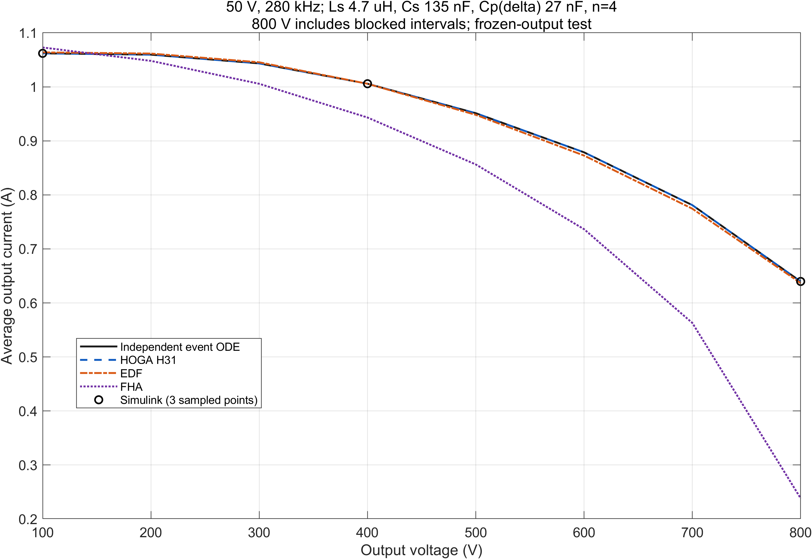
图3-1 280 kHz下平均输出电流随输出电压变化。 四条曲线为独立ODE、HOGA H31、EDF、FHA；空心圆仅为三个Simulink点。参数见表2-1，800 V为非CCM。复用原图；矢量PDF。曲线连接只表示离散点之间的视觉引导，不新增计算工况。

ODE输出电流从100 V的1.061984 A下降至800 V的0.639757 A，下降约39.76%。低压100–200 V区间变化很小，但不能据两点认定恒流区间的连续边界。HOGA与参考曲线在该纵轴尺度上几乎重合，EDF在高压部分略低，FHA则明显低估高压传能能力。
表3-1 电压扫描的实际输出电流及有符号误差，$f_s=280$ kHz
| $V_o$/V | ODE/A | HOGA/A | EDF/A | FHA/A | HOGA误差/μA | EDF误差/mA | FHA误差/mA |
|---|---|---|---|---|---|---|---|
| 100 | 1.06198359 | 1.06198317 | 1.06376044 | 1.07281523 | −0.414 | 1.777 | 10.832 |
| 200 | 1.05953196 | 1.05953170 | 1.06159739 | 1.04807536 | −0.261 | 2.065 | −11.457 |
| 300 | 1.04335616 | 1.04335026 | 1.04542738 | 1.00566476 | −5.905 | 2.071 | −37.691 |
| 400 | 1.00576998 | 1.00575159 | 1.00566342 | 0.94320590 | −18.392 | −0.107 | −62.564 |
| 500 | 0.95121742 | 0.95118006 | 0.94815051 | 0.85632757 | −37.365 | −3.067 | −94.890 |
| 600 | 0.87873631 | 0.87875664 | 0.87278423 | 0.73644546 | 20.334 | −5.952 | −142.291 |
| 700 | 0.78096864 | 0.78098142 | 0.77437487 | 0.56287236 | 12.777 | −6.594 | −218.096 |
| 800* | 0.63975722 | 0.63976810 | 0.63676077 | 0.23833819 | 10.884 | −2.996 | −401.419 |
*800 V为非CCM。来源：电压特性处理表，上游Point_Results.csv。在400 V，EDF相对输出误差约−0.01059%，FHA约−6.221%；到800 V分别约−0.4684%和−62.7455%。这说明保留整流电容充放电与事件结构，对本电路的高压端口预测比简单钳位基波假设更重要。该比较不能单独分离每项近似的因果贡献，相关机理在第七章讨论。
3.2 输出电流误差随输出电压变化
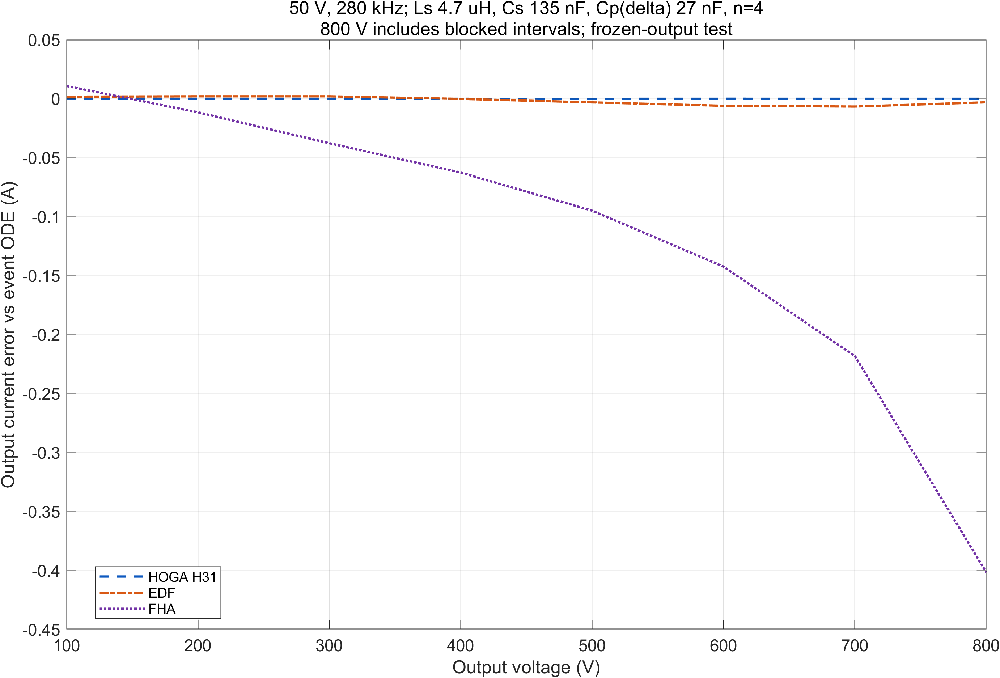
图3-2 280 kHz下输出电流有符号误差，参考为独立事件ODE。 矢量PDF。纵轴为A，小误差曲线的精确值见表3-1，不能从视觉重合解释为零误差。

8点输出电流MAE分别为HOGA 13.292 μA、EDF 3.079 mA、FHA 122.405 mA。HOGA最大误差37.365 μA出现在500 V，并不出现在电压最高处；EDF最大6.594 mA出现在700 V，800 V误差反而减小；FHA的绝对误差从200 V至800 V持续增加。EDF误差在300–400 V之间变号，表明平均量可能出现误差抵消，不能用400 V的极小输出误差代表全电压精度。
在本8点集合中HOGA输出误差均最小，但800 V的导通模态已改变；图中的趋势不能推断“电压越高HOGA越准确”，也不能把一个非CCM点用于建立CCM全范围结论。
3.3 输出电流误差与开关频率
以下仅使用100、400、800 V各自五个真实频率点，未插值生成结果。为同时显示不同数量级的误差，纵轴采用绝对误差的对数坐标；方向信息保留于逐点处理CSV。
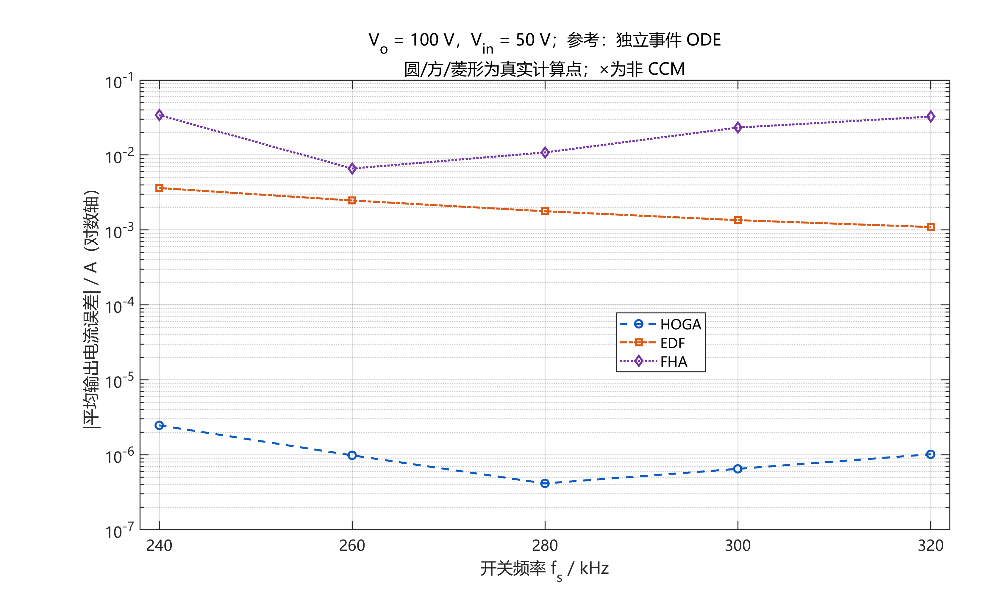
图3-3 100 V下平均输出电流绝对误差与频率关系，五点均为CCM。 矢量PDF。

参考电流由240 kHz的2.003859 A降至320 kHz的0.728260 A。HOGA绝对误差范围0.414–2.466 μA；EDF从3.626 mA减至1.094 mA。FHA在260 kHz误差较小，为−6.603 mA，但在240 kHz为−34.039 mA、320 kHz为+32.523 mA，存在变号而非单调改善。此处HOGA平均电流优势一致，不能由此推断其峰值也逐点最优，见第4.3节反例。
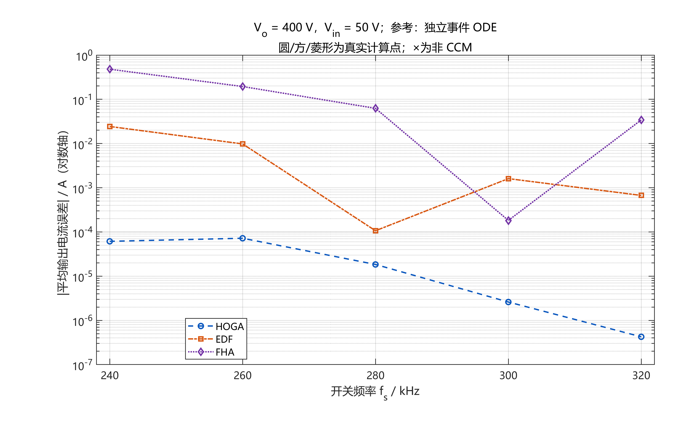
图3-4 400 V下平均输出电流绝对误差与频率关系，五点均为CCM。 矢量PDF。

240 kHz处EDF/FHA分别低估24.321/480.332 mA，后者约为参考1.540715 A的31.18%；320 kHz处误差变为+0.671/+34.189 mA。HOGA最差点在260 kHz，为−72.043 μA，仍远小于同点EDF的−9.809 mA。400 V/300 kHz是EDF并不总胜FHA的反例：FHA误差+0.182 mA，小于EDF的+1.609 mA，但FHA同点RMS误差0.614901 A，远大于EDF的0.026159 A。单个平均输出指标接近可能伴随明显的波形与应力偏差。
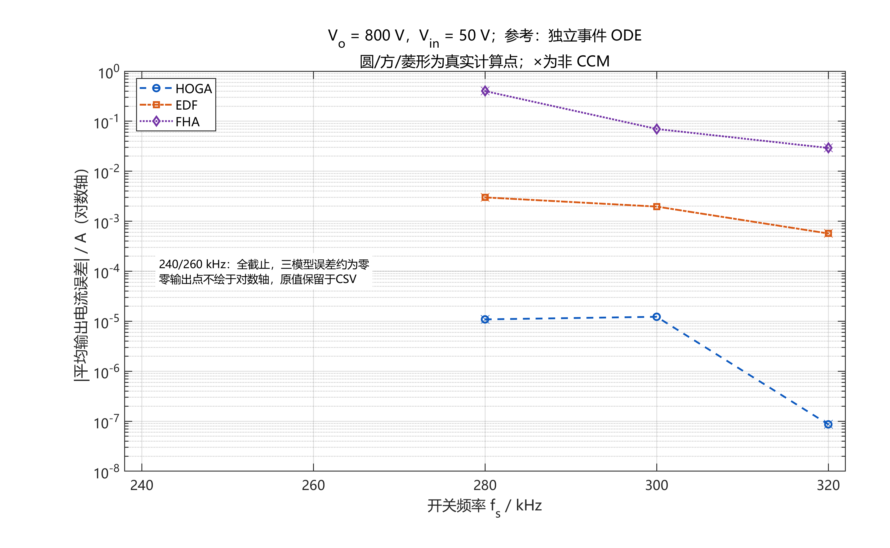
图3-5 800 V下平均输出电流绝对误差与频率关系。 ×表示参考非CCM；只有300 kHz满足本报告CCM定义。矢量PDF。240/260 kHz的EDF/FHA误差恰为0，HOGA约 $6.14/4.81\times10^{-16}$ A属于数值零；这两个全截止零输出点统一不绘于对数轴，图中文字明确标注，原值保留CSV，不用于模型排名。

280、300、320 kHz的参考输出电流分别为0.639757、0.799840、0.723957 A。截止比例分别为7.4097%、0、7.7637%，说明本扫点中的模态和电流均不随频率简单单调变化。三个传能点的HOGA误差分别为+10.884、−12.266、+0.0865 μA；EDF为−2.996、+1.963、+0.569 mA；FHA为−401.419、−70.117、+29.178 mA。数据支持这些离散点的比较，不足以确定两个CCM边界的位置或证明800 V整个频段的解分支连续可达。
全截止两点存在DC代表解族。其输出零误差不能说明循环电流预测无误：例如800 V/260 kHz，EDF/FHA峰值三相平均误差仍约0.198761 A。平均传能与器件电流应力必须分别评价。
第四章 谐振波形和电流应力精度对比
4.1 低、中、高输出电压下三相电流
选取100、400、800 V及280 kHz，分别代表低压含三管重叠、中压连续两管主导、高压含全截止区间的情况。800 V作为范围外对照保留。图4-1至4-9逐相复用现有图，保证每文件一图；所有时间轴均为相A门控定义的 $t/T$，周期 $T=3.571429$ μs。图中Simulink圆点为显示抽样，误差计算使用完整8192点，不使用稀疏圆点。
表4-1 典型工况应力及波形误差（同工况ODE参考）
| $V_o$/V | 模型 | 三相最大RMS/A | 三相最大峰值/A | 三相RMS MAE/A | 三相峰值MAE/A | 波形NRMSE/% |
|---|---|---|---|---|---|---|
| 100 | ODE | 5.941107 | 8.459929 | — | — | — |
| 100 | HOGA | 5.941132 | 8.472541 | 0.0000243 | 0.012612 | 0.05610 |
| 100 | EDF | 5.947925 | 8.411636 | 0.006817 | 0.048294 | 1.44669 |
| 100 | FHA | 5.582950 | 7.895484 | 0.358157 | 0.564445 | 4.66046 |
| 400 | ODE | 7.111843 | 10.305781 | — | — | — |
| 400 | HOGA | 7.111612 | 10.286756 | 0.000230 | 0.018949 | 0.05598 |
| 400 | EDF | 7.114994 | 10.062122 | 0.003152 | 0.243583 | 2.02337 |
| 400 | FHA | 6.100296 | 8.627121 | 1.011547 | 1.678584 | 17.64519 |
| 800* | ODE | 8.628231 | 12.074062 | — | — | — |
| 800* | HOGA | 8.628301 | 12.074066 | 0.0000695 | 0.00000399 | 0.05617 |
| 800* | EDF | 8.613751 | 12.181684 | 0.014480 | 0.107622 | 1.28266 |
| 800* | FHA | 7.518459 | 10.632707 | 1.109772 | 1.441355 | 65.56523 |
前两列应力取相间最大，而误差列按相逐一比较后平均，因此不要求两列最大值之差等于MAE。来源：逐点复算、分相原始指标。EDF/FHA所列峰值是其正弦重构预测，用于检验近似误差，不表示已经可靠预测真实瞬时器件峰值。
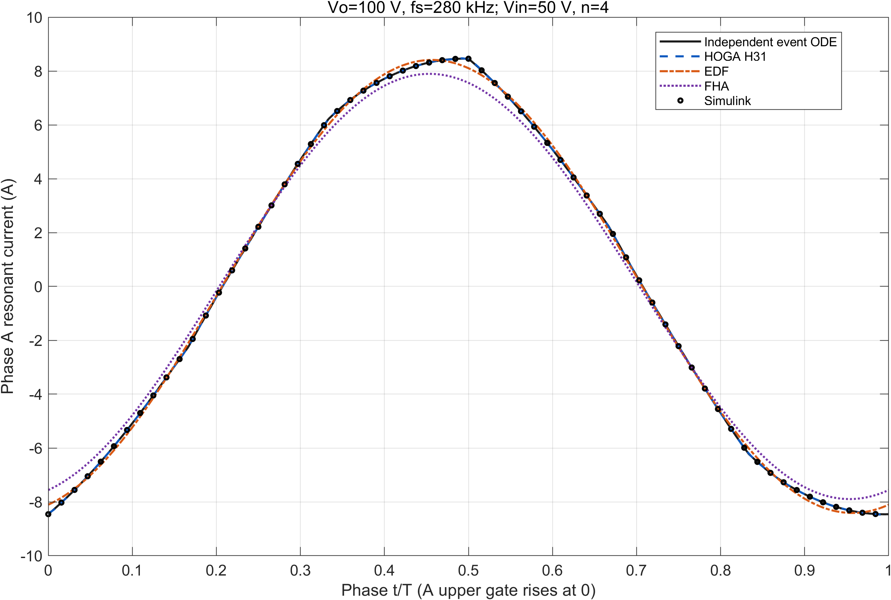
图4-1 100 V、280 kHz，相A电流。 PDF。参考三相最大峰值8.459929 A，HOGA略高估约12.6 mA；EDF低估约48.3 mA，FHA低估约0.564 A。平均输出电流接近并未使正弦重构准确再现局部峰顶。

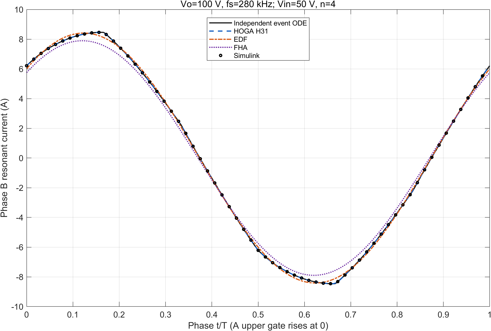
图4-2 100 V、280 kHz，相B电流。 PDF。相序由原门控固定，不单独平移相B。三相RMS误差平均为HOGA24.28 μA、EDF6.817 mA、FHA0.358 A，说明图4-1的差异不是只选择相A得到的结果。

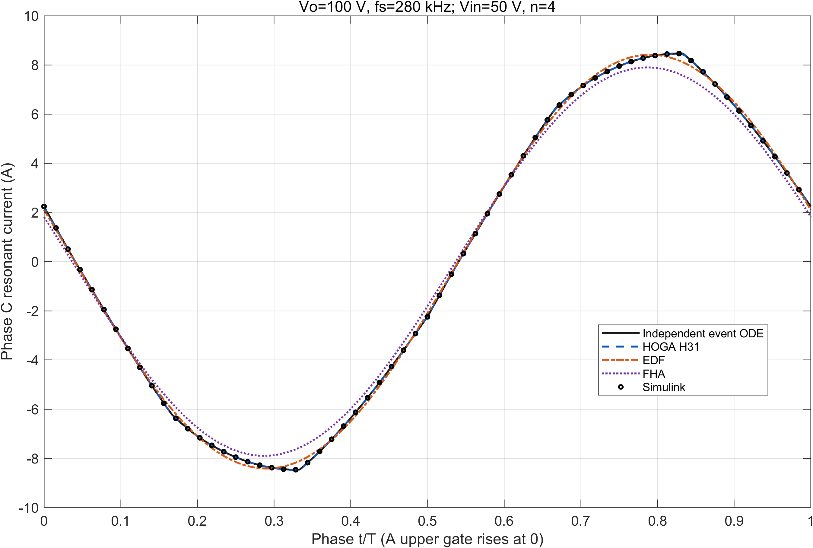
图4-3 100 V、280 kHz，相C电流。 PDF。三相合并波形NRMSE为0.05610%/1.44669%/4.66046%（HOGA/EDF/FHA）。低压参考存在约43.87%的三管重叠区间；其比例取自已有审计，不由图中的谐振电流过零直接判断。EDF保留重叠事件，因此优于只采用简化钳位的FHA，但仍遗漏高次电流反馈。


图4-4 400 V、280 kHz，相A电流。 PDF。ODE最大峰值10.305781 A，HOGA为10.286756 A；EDF/FHA分别为10.062122/8.627121 A。EDF输出电流误差仅−0.107 mA，但峰值误差约0.244 A，说明积分量准确不能替代器件应力验证。
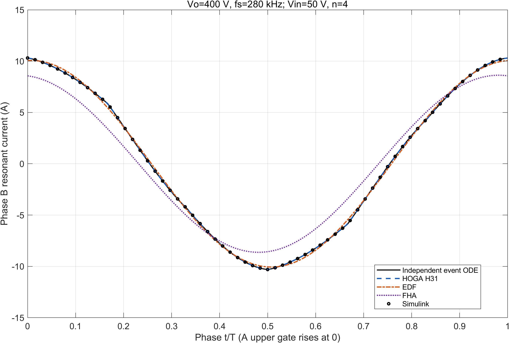
图4-5 400 V、280 kHz，相B电流。 PDF。相B同样表现出EDF/FHA的正弦幅相限制；三相最大瞬时电流误差分别为0.03873/0.40922/2.46444 A，而非各模型的输出电流误差。误差在门控边沿附近增大，有限阶导数和端口非线性都影响局部形状。

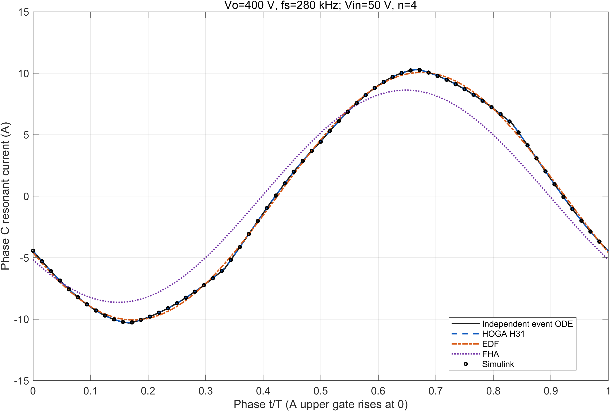
图4-6 400 V、280 kHz，相C电流。 PDF。三相合并NRMSE为0.05598%/2.02337%/17.64519%。EDF/FHA六个匹配过零时刻的最大偏移分别约12.88/82.54 ns，较低压点增大；这里比较的是已保存波形的过零位置，不进行相位校正。

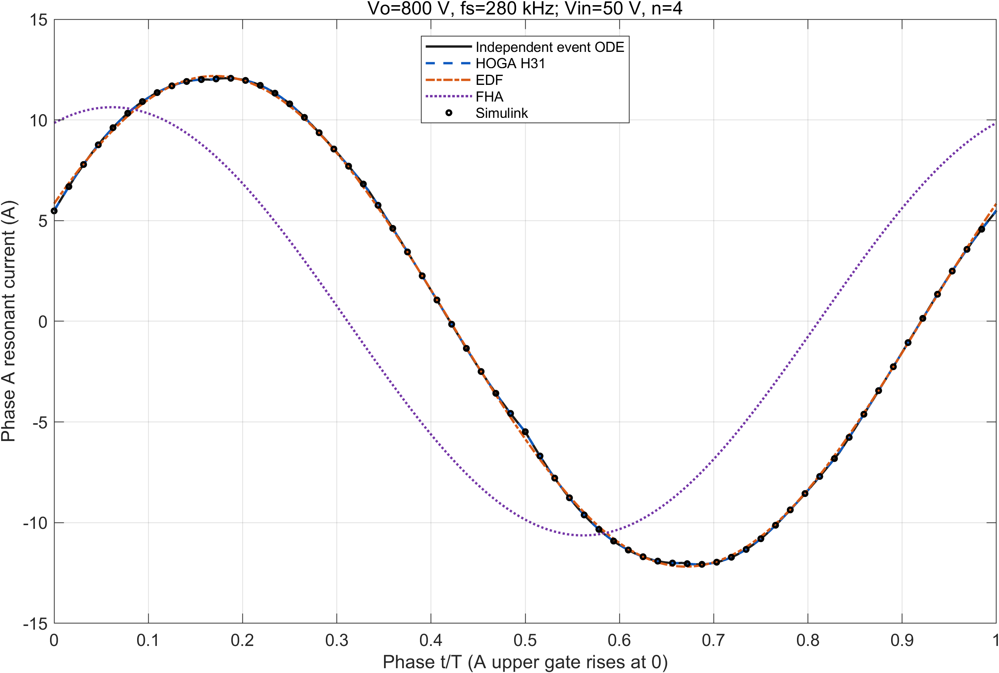
图4-7 800 V、280 kHz，相A电流（非CCM）。 PDF。参考峰值12.074062 A，HOGA与其相间最大峰值相差仅约3.9 μA，但HOGA整周期最大波形误差仍为0.03832 A；极小峰值误差不能证明整条波形或开关沿同样达到μA级精度。

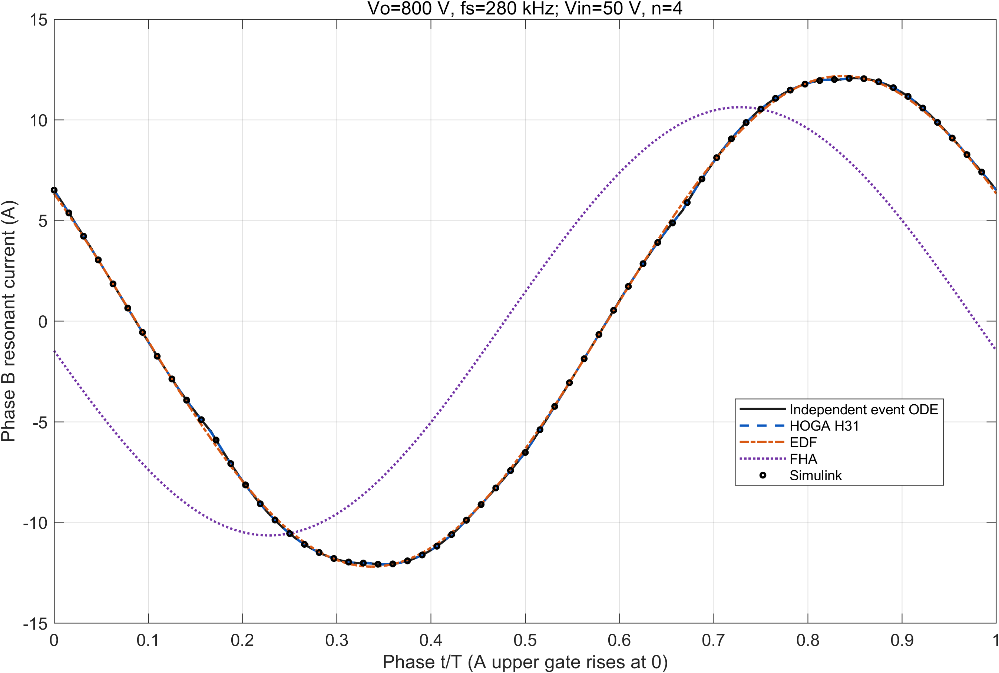
图4-8 800 V、280 kHz，相B电流（非CCM）。 PDF。EDF峰值约12.181684 A，高于参考，而FHA峰值约10.632707 A，明显低估；EDF和FHA并非具有相同的误差方向。模型的幅值和相位偏差共同进入波形误差，不能只看峰值大小。

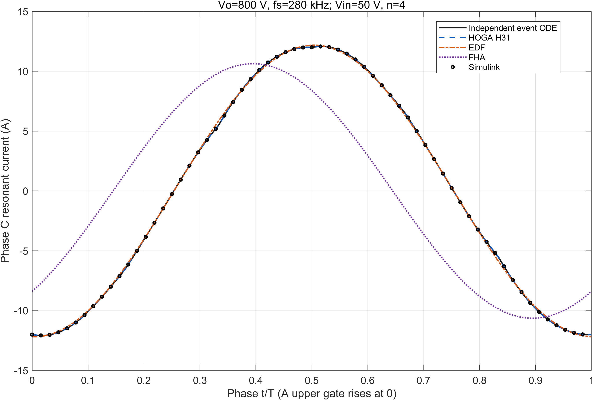
图4-9 800 V、280 kHz，相C电流（非CCM）。 PDF。EDF/FHA最大过零偏移约1.23/387.89 ns，FHA约为周期的10.86%；其波形NRMSE达65.565%，而EDF为1.283%。FHA的主要问题已不只是少量峰顶失真，而包括端口等效导致的幅相误差。

过零诊断对每相正、负斜率过零分别匹配，以线性插值估计时间，仅作解释性指标，见waveform_diagnostics.csv。HOGA三点最大偏移均小于0.12 ns，但8192点网格间隔约0.436 ns，插值亚网格数值不能证明硬件或真实事件时刻达到了0.12 ns准确度。800 V/H31的极小峰值误差也低于Simulink/ODE相互差异所能支持的确定性，不能据此选出“普遍最优工作点”。
4.2 RMS预测误差

图4-10 280 kHz下三相谐振电流RMS平均绝对误差，参考为独立事件ODE。 PDF。纵轴对数，800 V以×标为非CCM。
8点RMS MAE为HOGA 0.1407 mA、EDF 24.775 mA、FHA 0.92996 A。在典型100/400/800 V，HOGA误差分别约24.28/230.25/69.51 μA，而EDF为6.817/3.152/14.480 mA。400 V的EDF RMS接近不意味着其峰值同样接近，表4-1已显示峰值误差约0.244 A。
RMS由各谐波能量平方相加决定，但基波近似的RMS误差不仅是漏掉的高阶能量：非线性闭合也会改变预测基波幅值。因此不能用“THD小”直接保证EDF/FHA RMS误差小。HOGA对本20个已采样点的三相RMS MAE均最小；这是有限样本结论，非整个参数空间证明。
4.3 峰值预测误差与例外

图4-11 280 kHz下三相峰值平均绝对误差。 PDF。EDF/FHA为正弦重构峰值；不包含寄生振铃、反恢复或器件电容产生的尖峰。
8点峰值MAE为HOGA 5.326 mA、EDF 0.15141 A、FHA 1.34805 A。HOGA在400 V的三相平均误差18.949 mA最大，而800 V仅3.993 μA，两者不能仅按电压高低解释。峰值是多个谐波在极值附近按相位叠加的结果，局部抵消可造成个别点极小误差。
扩展至全20点后，HOGA在19点峰值MAE最小；100 V/260 kHz例外：HOGA为9.661 mA，EDF为4.562 mA。同点RMS误差仍为HOGA31.54 μA、EDF12.216 mA，波形NRMSE分别约0.06066%、1.63833%。EDF此处的较小峰值误差不能推翻整体波形差异，也不能被人为删去。全部逐点排名见point_rankings.csv，并列容差为 $10^{-12}$ A或对应无量纲单位。
4.4 谐波、过零和换向附近误差
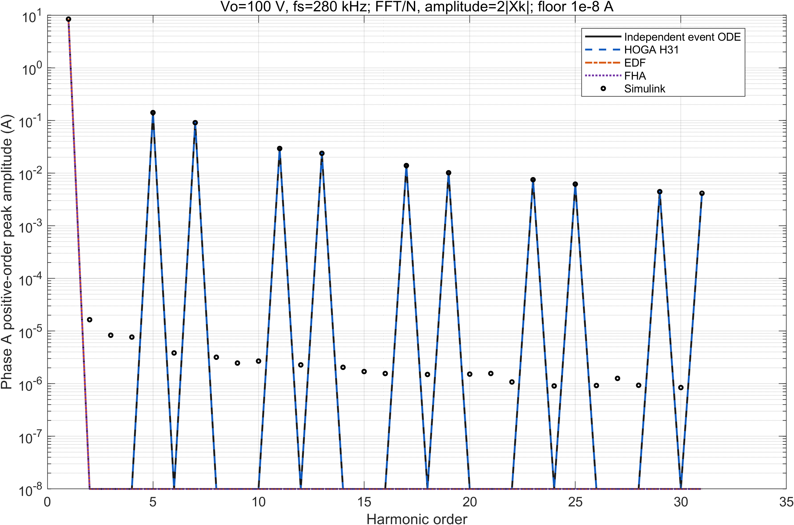
图4-12 100 V、280 kHz，相A电流正阶峰值频谱。 PDF。参考基波约8.4002 A，5/7次约0.14073/0.09063 A；三相最大采样THD约2.0588%。EDF/FHA缺少这些高次分量，HOGA可表达其主要部分。图中 $10^{-8}$ A是原图显示下限，不能当作实际残余谐波。

图4-13 400 V、280 kHz，相A电流正阶峰值频谱。 PDF。参考5/7次幅值约0.22729/0.06617 A，三相最大THD约2.4004%。EDF的基波幅值约10.0621 A，与参考基波约10.0548 A已很接近；但参考实际峰值约10.3058 A。缺失谐波的相位叠加解释了“基波、RMS接近，峰值仍有约0.244 A误差”的现象。

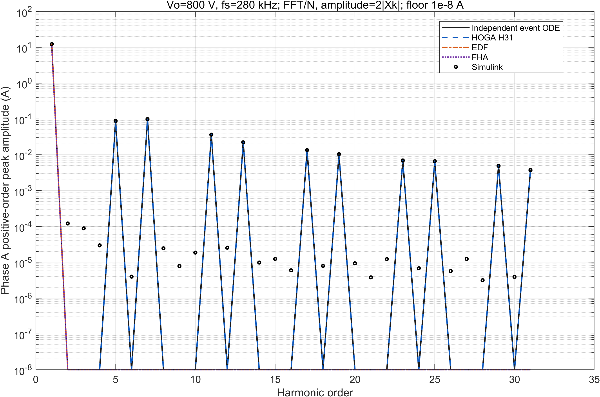
图4-14 800 V、280 kHz，相A电流正阶峰值频谱（非CCM）。 PDF。参考基波约12.2014 A，5/7次约0.08810/0.09860 A，THD反而降至约1.1523%；FHA波形误差却最高。由此不能把FHA高压误差简单归因于“谐波越来越多”，其整流等效引起的幅值、相位和传能偏差同样关键。

THD采用保存的8192点周期波形，排除DC和基波、保留可分辨高阶能量：$\mathrm{THD}=\sqrt{I_{rms}^2-I_0^2-I_{1,rms}^2}/I_{1,rms}$。它不是无限带宽硬件THD。门控六边沿分别取 $\tau=0,1/6,\ldots,5/6$ 的对应相电流：20点HOGA/EDF/FHA边沿平均绝对误差为 0.03865/0.39169/2.22544 A，最大为 0.04547/0.62770/4.41770 A。HOGA提高了理想谐振电流边沿估计，但边沿误差远大于其平均输出误差，不能用μA级输出误差宣称同等精度的开关损耗。
这些数值来自Port_Metrics.csv并在本次重新配对统计；没有据此生成不存在的FHA二极管换流电流、整流纹波或ZVS结果。电感电流、变压器电流、二极管电流和器件支路电流有各自的拓扑映射，不能互换。
第五章 HOGA谐波阶数与收敛性分析
5.1 试验设计、数据口径和收敛判据
复用100/400/700/800 V、280 kHz下 $H=1,3,5,7,9,15,31$ 共28点，未增加高阶求解。阶数试验原始MAT在 00_audit/data/stage1_run02，统一比较数据为Harmonic_Convergence.csv。原候选在单周期内有效；周期延拓修复不改变其Fourier系数。参考使用独立ODE，不将最高阶HOGA本身当真值。
数值收敛分三层：代数/事件残差、本地物理守卫、参考精化与连续两次升阶验收。28点均通过前两层；只有四个H31点经过第三层。严格验收检查H9→H15、H15→H31两次变化、事件拓扑及时间，并与参考比较；积分量阈值1%、峰值2%、事件时间 $10^{-3}T$，另有波形及参考自收敛约束。这些是已有验收阈值，不是本报告重新设定的误差目标，也不保证所有指标单调变化。
5.2 输出电流、峰值与波形误差的阶数变化
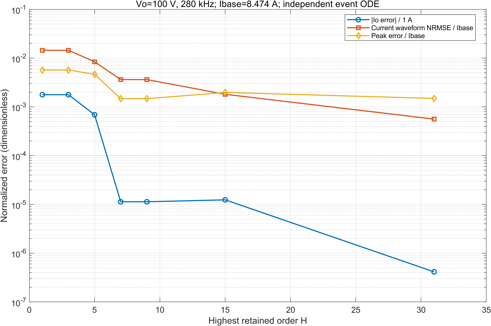
图5-1 100 V、280 kHz的阶数误差。 PDF。输出误差除以1 A，峰值最大误差除以 $I_b$，波形按式(2-2)归一化，三条曲线的分母不同。

H1输出误差1.77685 mA到H31降为0.414 μA；但H7→H15峰值最大误差由12.462 mA增至16.755 mA，H31仍为12.612 mA，略高于H7。与此同时波形NRMSE由H7的0.36310%降为H31的0.05610%。峰值非单调不等于整体波形发散，局部峰顶误差与积分误差是不同目标。
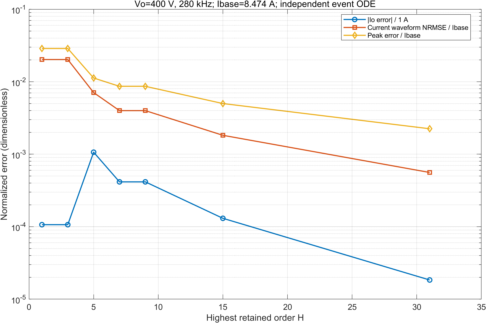
图5-2 400 V、280 kHz的阶数误差。 PDF。H1输出误差约−0.10656 mA，而H5增至+1.06589 mA，H15为+0.13051 mA，H31为−0.01839 mA；输出误差既非单调，也会变号。峰值最大误差则从H1的0.24366 A降至H31的0.01903 A，显示高次电流对局部应力更重要。

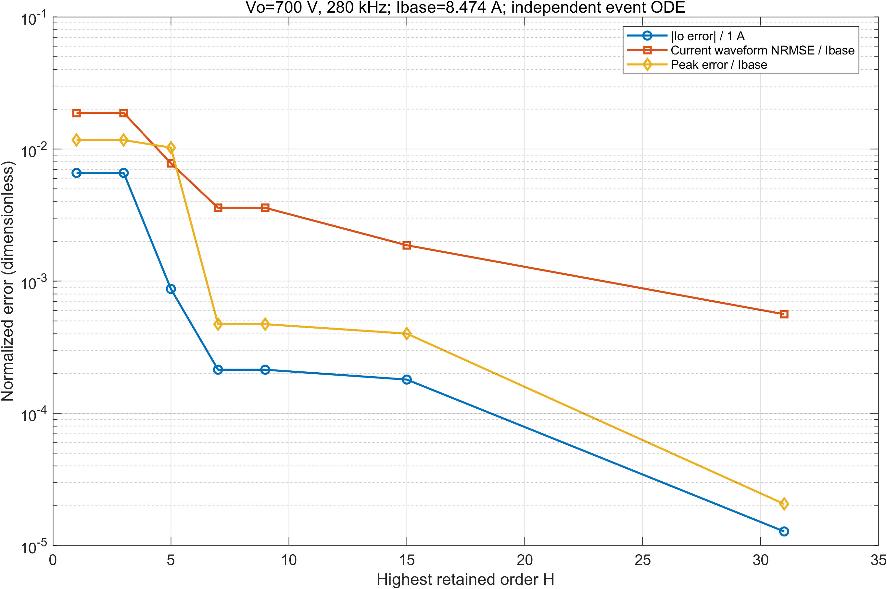
图5-3 700 V、280 kHz的阶数误差。 PDF。输出绝对误差由H1的6.59377 mA降至H31的12.777 μA；峰值最大误差由0.09901 A降至0.17469 mA。H7已经使峰值误差降至4.006 mA，但H31进一步提高精度；不能把这个工作点的显著提升当成100 V峰值也会按相同比例改善。

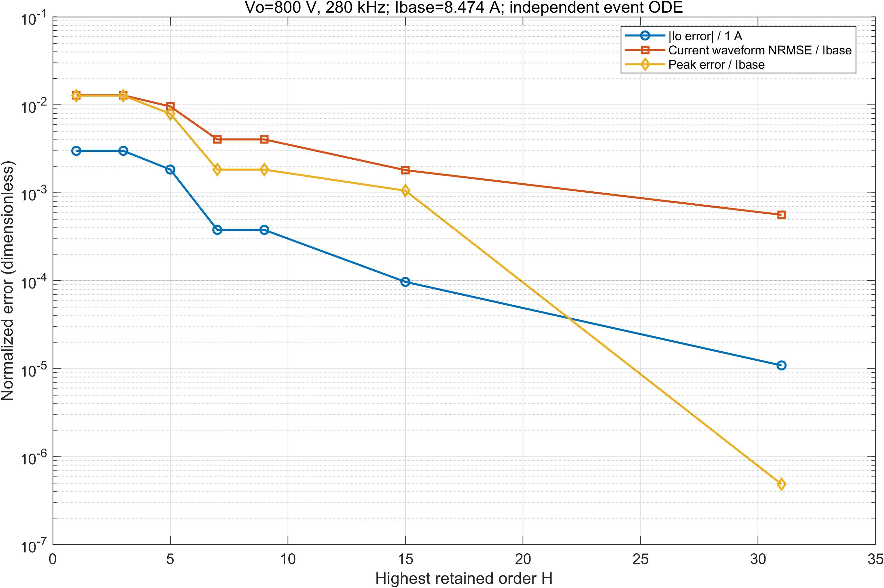
图5-4 800 V、280 kHz的阶数误差（非CCM）。 PDF。H1/H5/H15/H31输出误差依次约−2.9964/+1.8363/−0.09703/+0.01088 mA；峰值最大误差由H1的0.10762 A降至H31约4.117 μA。后者是特定轨道极值处的结果，不是开关沿误差，也不是完整波形达到相同精度的证据。

平衡、半波对称及零序约束使三倍频等部分电流谐波消失，故本数据H1≈H3、H7≈H9。形式阶数增加未必增加有效电流分量。不能把所有“平台段”解释为求解器未收敛；反之，有新谐波而误差不降时，也不能仅凭小残差排除模型或事件问题。
5.3 RMS阶数误差
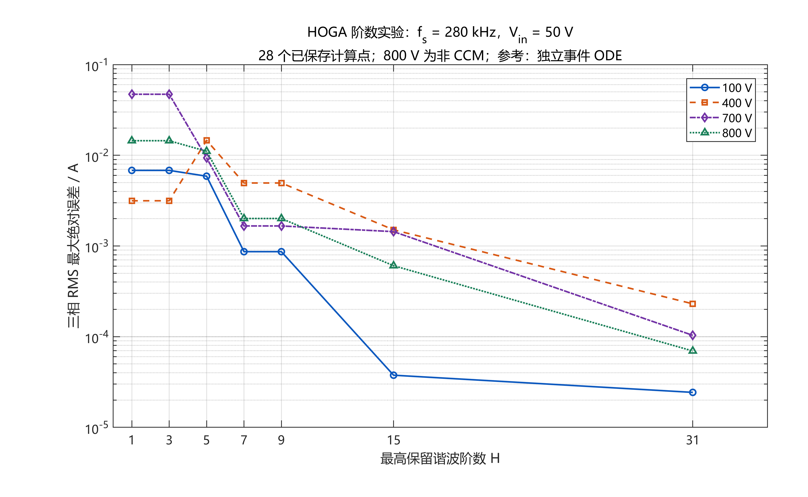
图5-5 四工况三相RMS最大绝对误差随H变化。 PDF。本图为补图，使用全部28点；纵轴采用最大相误差，不同于图4-10的三相MAE。

在400 V处，H1 RMS最大误差3.152 mA，H5反而增至14.611 mA，H31降至0.2303 mA；700 V处由H1的47.119 mA降至H31的0.1034 mA。即使RMS是积分量，重新闭合事件后基波幅相也会改变，不能假设每加入谐波都单调增加或改善RMS。H31四点最坏RMS误差为0.2303 mA，但这一四点上界不代表全部20点；20点中最大相RMS误差0.6628 mA出现在400 V/260 kHz。
5.4 阶数与计算时间
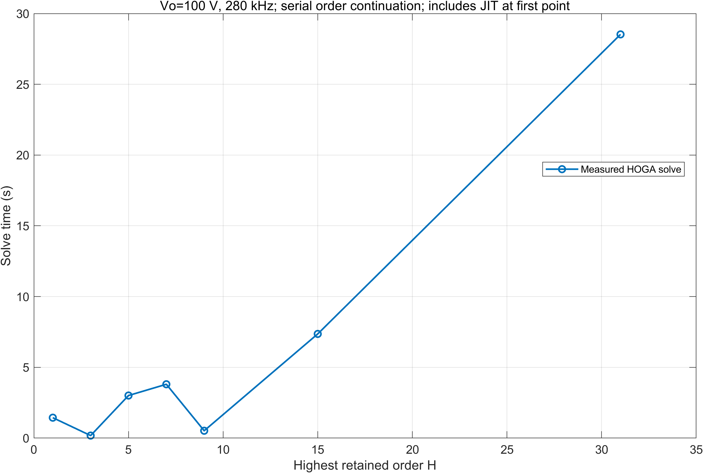
图5-6 100 V阶数求解时间。 PDF。H7、H15、H31分别约3.804、7.362、28.527 s；H3约0.178 s短于H1的1.443 s，与前阶初值/JIT影响有关，不是矩阵规模变小的证明。


图5-7 400 V阶数求解时间。 PDF。H7/H15/H31分别约0.550/2.673/8.537 s。H31在本阶数连续求解中并非“至少11 s”；这里按CSV保留真实8.537 s，与其他初值下的计时分开。
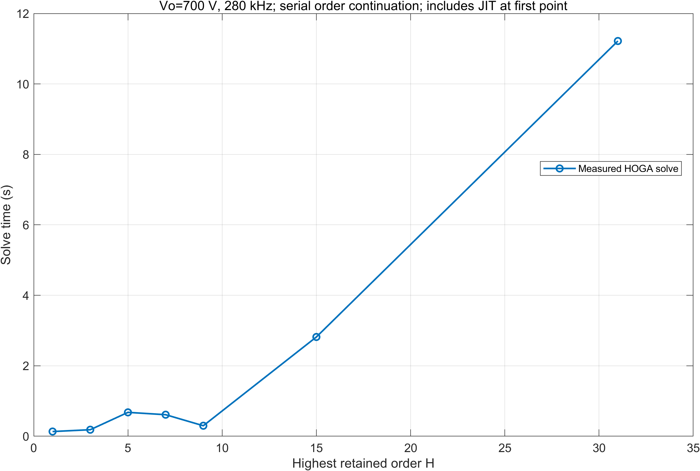
图5-8 700 V阶数求解时间。 PDF。H7/H15/H31分别约0.612/2.818/11.219 s，对应峰值最大误差4.006/3.400/0.175 mA。为取得该峰值改善增加了明显计算成本，是否必要取决于应力裕量需求。

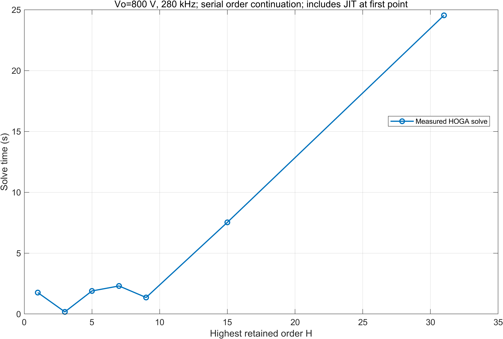
图5-9 800 V阶数求解时间（非CCM）。 PDF。H7/H15/H31分别约2.302/7.529/24.538 s，高于400 V同阶数，反映事件与初值对实际求解成本的影响。不能仅由H推导统一耗时模型。

以上时间为保存MAT中的 elapsed，原串行升阶运行使用前阶初值，含不同程度预热；stage1_hoga.csv记录的外层时间还含诊断开销，略大于图中的纯求解段。不得混用两个字段，也不能拿本图当严格冷启动复杂度测试。
5.5 收敛数据汇总、残差与合理阶数
表5-1 四工况的阶数结果汇总（每行最坏误差可来自不同工况）
| H | 本地守卫通过 | 最大输出绝对误差/mA | 最大相RMS误差/mA | 最大相峰值误差/mA | 实测求解时间范围/s |
|---|---|---|---|---|---|
| 1 | 4/4 | 6.5938 | 47.1193 | 243.6593 | 0.134–1.759 |
| 3 | 4/4 | 6.5938 | 47.1193 | 243.6593 | 0.078–0.185 |
| 5 | 4/4 | 1.8363 | 14.6115 | 95.3635 | 0.478–3.008 |
| 7 | 4/4 | 0.41545 | 4.95143 | 73.2591 | 0.550–3.804 |
| 9 | 4/4 | 0.41545 | 4.95143 | 73.2591 | 0.256–1.355 |
| 15 | 4/4 | 0.18021 | 1.50791 | 42.3861 | 2.673–7.529 |
| 31 | 4/4 | 0.01839 | 0.23026 | 19.0254 | 8.537–28.527 |
28点事件残差最高约 $2.75\times10^{-13}$（缩放无量纲），远小于 $10^{-9}$ 代数阈值，仍存在表中的误差，因此不能把残差当模型误差。H31强形式KVL全周期RMS约3.907–3.917 V，有限Fourier导数在理想门控跳变附近仍有Gibbs误差。电流本身连续且被积分平滑，电流RMS很准与导数残差非零可以同时存在；没有删除跳变邻域来美化这一指标。
本次两项既有隔离修复分别为跨周期重构和全截止功率诊断。前者只修正 $\tau>1$ 映射，后者以六个门控区间解析积分重算功率及守卫，均未调整元件或原始求根系数。不能把当前HOGA优于legacy的精度归因于本次画图或这两个诊断修复。
表5-2 四点独立参考精化及H31严格验收
| $V_o$/V | 参考输出电流相对变化 | 参考峰值相对变化 | 事件时间变化/$T$ | H31严格验收 |
|---|---|---|---|---|
| 100 | $3.56\times10^{-11}$ | $1.50\times10^{-8}$ | $9.38\times10^{-12}$ | PASS |
| 400 | $3.66\times10^{-11}$ | $1.70\times10^{-5}$ | $1.17\times10^{-11}$ | PASS |
| 700 | $1.42\times10^{-10}$ | $6.47\times10^{-8}$ | $1.82\times10^{-11}$ | PASS |
| 800* | $4.05\times10^{-10}$ | $5.44\times10^{-8}$ | $6.90\times10^{-11}$ | PASS（非CCM） |
来源：Convergence_Validation.csv、本次原MAT状态提取。参考精化数据中的电流/峰值变化是相对量，不能误写成A。其余16点未做同等级两次升阶验收，没有H31以上的统一阶数数据，不宣称已证明无限阶极限或误差上界。
基于现有数据，H7可作为低成本初筛候选，H15用于中间精化，H31作为本报告比较基准。H9在四个对称工况中未带来H7以外的电流精度，不能仅因“更高阶”默认选它。若目标是100 V峰值，H31并未明显优于H7；若目标是400 V峰值，H31则明显改善。合理阶数应由所需指标及工况验收确定，不能预先承诺统一精度阈值。
第六章 模型精度与计算效率综合比较
6.1 共同CCM工况的统一对比
主统计集合明确取三模型和ODE共同有效且参考满足CCM的16点。实际记录中三种模型最终都覆盖这16点，因此不存在为某模型另选有利集合的问题。若后续增加数据，应重新求交集，不可各用各的有效点平均。
表6-1 主比较：共同16个CCM工况精度、实现成本与适用范围
| 指标 | HOGA H31 | EDF | FHA |
|---|---|---|---|
| 平均输出电流绝对误差/A | 0.000015579 | 0.004284246 | 0.090874150 |
| 最大输出电流绝对误差/A | 0.000072043 | 0.024320691 | 0.480331653 |
| 输出电流NRMSE（基值1 A，无量纲） | 0.000026773 | 0.007145456 | 0.149999534 |
| 三相RMS平均绝对误差/A | 0.000159163 | 0.032658642 | 0.924246899 |
| 三相峰值平均绝对误差/A | 0.004838040 | 0.124618690 | 1.367172052 |
| 合并波形NRMSE/%（基值8.473990 A） | 0.056637 | 1.905637 | 22.207816 |
| 单次暖启动时间/s，400 V/280 kHz | 10.875752 | 0.054901 | 0.000942 |
| 外部H7种子构建/s，另计 | 1.577960 | 不适用 | 不适用 |
| 初次扫描数值/守卫成功率（总20点） | 18/20，90% | 20/20，100% | 20/20，100%† |
| 恢复后有效点率（总20点） | 20/20，100% | 20/20，100% | 20/20，100%† |
| 已比较工况 | 16 CCM＋4非CCM探索；仅4点有严格H31验收 | 同一20点；基波电流、非线性整流近似 | 同一20点；基波应力估计与粗略端口分析 |
†FHA“数值成功”包括800 V/240、260 kHz的无导通根分支返回，不意味着20点均为导通解、CCM或高精度解。恢复后共同CCM覆盖率三者均为16/16；成功率的分母与精度统计分母不同，已明确列出。严格冷启动（新进程、启动/初始化全部计入）无匹配测量，不能填入上述暖启动值。
在本16点集合，EDF相对FHA的输出MAE减少约95.29%；HOGA相对EDF减少约99.64%。HOGA的RMS和峰值MAE分别约为EDF的1/205和1/25.8。改善幅度很大，但实际价值应结合误差的绝对量和设计容差，而非只看百分比改善。原始与复算统计分别见Error_Statistics.csv、common_scope_statistics.csv。
表6-2 范围外及全样本的补充统计，参考均为事件ODE
| 集合/点数 | 模型 | 输出MAE/A | 最大输出误差/A | RMS MAE/A | 峰值MAE/A | 波形NRMSE/% |
|---|---|---|---|---|---|---|
| 非CCM/4 | HOGA | 0.000002743 | 0.000010884 | 0.000031734 | 0.005863 | 0.058337 |
| 非CCM/4 | EDF | 0.000891241 | 0.002996445 | 0.008363570 | 0.152933 | 1.533177 |
| 非CCM/4 | FHA | 0.107649298 | 0.401419034 | 0.404805254 | 0.669424 | 35.149951 |
| 全部/20 | HOGA | 0.000013012 | 0.000072043 | 0.000133677 | 0.005043 | 0.056981 |
| 全部/20 | EDF | 0.003605645 | 0.024320691 | 0.027799628 | 0.130282 | 1.837196 |
| 全部/20 | FHA | 0.094229180 | 0.480331653 | 0.820358570 | 1.227623 | 25.330880 |
非CCM组有两个零输出点，会降低平均输出误差，故不能只引用该组更小的HOGA MAE宣称非CCM更准确。全样本表用于保留事实，不取代目标CCM主表。没有额外有效工况被隐去，也没有把失败候选作为有效点参加误差平均。
表6-3 三点Simulink fine参考下的独立交叉统计
| 模型 | 输出MAE/A | 最大输出误差/A | RMS MAE/A | 峰值MAE/A | 合并波形NRMSE/% |
|---|---|---|---|---|---|
| HOGA | 0.000010470 | 0.000024515 | 0.000115442 | 0.010554 | 0.056105 |
| EDF | 0.001618379 | 0.002982814 | 0.008129051 | 0.133141 | 1.615587 |
| FHA | 0.158263350 | 0.401405404 | 0.826468404 | 1.228038 | 39.291837 |
三点只涵盖100/400/800 V、280 kHz，其中2点CCM、1点非CCM，不能与20点ODE表拼成23个独立工况。二者存在重复工况，而且Simulink初态来自ODE；它提供不同数值平台的电路实现交叉核验，并不证明独立启动可达。HOGA在两个参考下整体表现相近，但误差低至数十μA时须结合表2-3的数值精化尺度解释。
6.2 耗时的分层比较
硬件/环境记录为MATLAB R2024b Update 1、PCWIN64，处理器标识 Intel64 Family 6 Model 183 Stepping 1, GenuineIntel，28逻辑处理器；数学测量限制为单数值线程。最终计时在本任务其他求解和绘图停止后进行，预备并发测量文件不用于排名。这里复用历史测量，没有在本次报告处理中重测求解性能。
表6-4 同进程400 V/280 kHz计时：第一次调用、暖启动及初始化分开
| 方法 | 本进程第一次调用/s | 预热timeit/s | 外部种子构建/s | 本次调用执行内容 |
|---|---|---|---|---|
| HOGA H31 | 7.548200 | 10.875752 | 1.577960 | 从自身H7种子求H31，含统一结果整理 |
| EDF | 0.180992 | 0.054901 | 0 | 完整描述函数及代数根求解 |
| FHA | 0.007255 | 0.000942 | 0 | 完整基波导纳根求解 |
| 事件ODE | 0.792181 | 0.462301 | 0 | 从自身构造初值执行周期射击 |
来源：Matched_Benchmark.csv。表中0表示没有单列外部种子构建，内部初始化仍在调用时间内，不表示初始化完全没有成本。HOGA第一次调用发生在H7构建之后，不是严格冷启动；第一次值小于timeit也说明单次时间存在状态/测量差异。四者辅助初值不同，不能把本表称为无条件完全公平的算法速度排名。
在这个已测场景，HOGA暖启动约为EDF的198倍，约为事件ODE的23.5倍。现有证据不支持“HOGA必然比直接时域参考快”。 Simulink在400 V、64周期的初始化9.8205 s、执行2.4316 s，内部总计12.3689 s、外部 sim 墙钟12.9463 s；均未计入独立ODE初态构建。不能拿HOGA全部求解时间只与Simulink执行段比较，也不能把Simulink墙钟和独立ODE初态重复或漏计。
另有已保存的同初值加速核对：向量化HOGA约0.19191 s，原版约2.10642 s，约10.98倍；四点系数最大差约 $4.94\times10^{-13}$ A。该实验与表6-4的H7→H31输入辅助信息不同，不能将0.19191 s替换进表6-4再宣称同口径排名。它说明实现优化可能有效，不改变物理模型的精度证据。
表6-5 历史扫描耗时与未计成本
| 方法 | 20点记录时间总和/s | 每点中位数/s | 最大单点记录/s | 口径 |
|---|---|---|---|---|
| HOGA | 581.8897 | 9.0520 | 342.7748 | 混合原版、向量化与恢复；恢复记录含原失败尝试成本 |
| EDF | 1.324394 | 0.065616 | 0.119810 | 历史单点求解时间，不含文件加载等 |
| FHA | 0.042158 | 0.001623 | 0.005144 | 同上 |
| 事件ODE | 12.566442 | 0.528966 | 1.565420 | 同上 |
另有100 V/240 kHz原版无初值尝试超过480 s后中断，未进入上述581.8897 s。故HOGA可识别的历史求解消耗至少约1061.89 s，仍不是完整工作总墙钟；启动、文件读写、诊断、画图等另计。来源：Efficiency_Statistics.csv、中断记录。不能用历史混合扫描表计算纯算法加速比。
6.3 不收敛、物理拒绝和恢复的完整处理
表6-6 历史未通过/中断记录及最终使用结果
| 工况 | 初次状态及依据 | 后续处理 | 统计处理 |
|---|---|---|---|
| 300 V/280 kHz，HOGA | 未收敛 | HOGA邻点延续恢复 | 原候选保留；最终使用recovery中的通过结果 |
| 800 V/320 kHz，HOGA | 二极管有符号反作用约−0.141 A、法锥残差约2.39 V；虽小代数残差仍拒绝 | 既有signed-reaction release策略恢复 | 失败不计精度；失败时间计入恢复记录 |
| 100 V/240 kHz，原版HOGA | 超过8分钟无点输出 | 人工中断后以经等价核验的向量化实现续算 | 记为中断，不冒称数值失败；额外时间单列 |
| 早期三点Simulink整理 | 新增电压日志未启用导致整理失败 | 既有流程修正并获得有效trace | 失败日志保留，不作为额外有效点 |
最终有效覆盖率100%不能抹去初次90%的HOGA通过率。复杂分支、模式发现与恢复成本直接影响批量设计优化的可靠性；应将其作为模型工程价值的一部分，而非只讨论成功点上的精度。
第七章 误差机理分析与研究结论
7.1 FHA的主要误差来自哪里
第一，电流只保留基波，删除了高次谐波对峰顶、门控附近和过零位置的修正。式(1-6)说明它也遗漏高次电流能量。但本数据THD约1%–3%的典型点仍可能有很大的FHA输出误差，说明这一项不是充分解释。
第二，FHA用正弦副边电流和六阶梯端口替代 $C_p$ 的真实充放电及六管桥的模式切换，其基波电压、电流和等效导纳都受此近似影响。800 V/280 kHz实际含全截止区间，而FHA仍以自己的基波导通根得到0.238338 A，相比ODE的0.639757 A偏低62.75%；同时出现387.89 ns过零偏移。误差包含闭合关系引起的基波幅相偏差，不只是漏掉若干小谐波。
第三，平均值可能偶然抵消误差。400 V/300 kHz的FHA输出误差仅0.182 mA，RMS误差却0.615 A。它既不能证明该点模型在所有指标上正确，也不能证明FHA在该频率附近有连续的高精度窗口。
以上机理与模型方程及误差模式一致，但没有逐项消融实验，不能定量宣称“多少百分比误差由某一近似造成”。参数不一致不是本统一数据的解释：三模型使用相同Ls/Cs/Cp/n/Rin/Vf。用户提供的另一ideal SLX的Vf差异已在第2章另列，没有用它替换本次参考。
7.2 EDF是否明显改善FHA
在共同CCM的输出、RMS、峰值和波形合并指标上均明显改善。EDF保留 $C_p$–六管桥的状态相关非线性及周期内记忆，因此能恢复FHA遗漏的触边、释放、两管/三管/截止窗口。它与FHA同样只有基波电流，但整流闭合不同，这直接反驳了“同为一阶就应具有相同精度”的推断。
这种改善不具有逐点全指标必然性。20点输出比较中，EDF在17点优于FHA，400 V/300 kHz劣于FHA，全截止两点并列；该反例已经纳入表和分析。EDF的正弦电流假设仍使400 V峰值误差约0.244 A，不能据其很准的输出平均值推导精确开关电流。
7.3 HOGA是否进一步提高精度
本次H31在共同16个CCM点的输出MAE、RMS MAE、峰值MAE及波形NRMSE均明显优于EDF/FHA。全20点中，HOGA输出在18个非零传能点误差最小，两个全截止点数值并列；RMS和波形NRMSE在20点均最小；峰值在19点最小，100 V/260 kHz由EDF更优。三个Simulink点提供相同总体方向的交叉支持，但不是20点全部的Simulink证明。
HOGA的优势属于“保留多谐波电流并与物理可行整流事件闭合”的组合。升阶非单调、legacy小谱残差仍物理失败、强形式KVL残差尚存等事实都已保留。不能将HOGA阶数或求解器成功旗标本身当作精度证明。
7.4 HOGA在哪些工作点表现最好
应按指标回答。280 kHz电压扫描中，HOGA输出绝对误差最小为200 V的0.261 μA，100 V为0.414 μA；最差为500 V的37.365 μA。全扫描最差输出误差是400 V/260 kHz的72.043 μA，最差相RMS误差也在该点，约0.6628 mA。全扫描波形NRMSE最差在400 V/240 kHz，约0.06640%，与输出最差点并不一致。
800 V/280 kHz的HOGA峰值误差尤其小，却仍有约38 mA的门控附近波形误差，且属于非CCM。800 V/320 kHz输出误差约0.0865 μA，但它经历物理候选拒绝和恢复，且没有该频率下的严格H序列验收。不能仅凭最小误差把这两点称为最稳健或最适合优化的区域。当前点数不足以分离频率、电压、谐波相位与模式变化的独立贡献，也未确定模态边界。
7.5 HOGA是否值得增加计算复杂度
对于只需毫安至数十毫安级输出特性粗筛的任务，EDF在本参数范围具有较好的成本与精度平衡；是否满足实际容差仍应逐点评估。FHA计算成本最低，可用于阻抗趋势及初始估计，但其高压和低频部分误差很大，不能作为高精度充电特性或器件应力的最终依据。
对于RMS、峰值和边沿电流敏感的离线设计精化，HOGA的实测改善有价值。然而本次原版H31暖启动慢于独立事件ODE，且扫描存在失败与恢复成本，所以不能仅凭“平均模型”名称认定其最适合大量优化评估。实际选型应比较所需误差、实现优化后的成本、分支可靠性及参考ODE的现有速度。H7初筛、H15/H31复核是由本四点阶数数据支持的候选流程，不是已验证的全域最优策略。
7.6 能否支撑三相LCC参数及损耗优化
已具备的基础： 本参数及已验证工况下，HOGA对理想周期电流、RMS、峰值和六个门控时刻电流较准确，能作为参数/应力筛选的数值内核。若在固定支路电阻模型下 $P_R=R I_{rms}^2$，小误差满足
$$ \frac{\Delta P_R}{P_R}\simeq2\frac{\Delta I_{rms}}{I_{rms}}+\frac{\Delta R}{R}.\tag{7-1} $$
这说明更准的RMS有助于降低电流引起的导通损耗误差，但不消除器件电阻温度依赖和分支电流映射误差。本报告没有将谐振线电流RMS直接当作每只MOS、二极管或变压器绕组的RMS。
尚不具备的完整证据： 真实开关损耗一般需要 $P_{sw}=f_s(E_{on}+E_{off}+E_{rr}+\cdots)$，能量依赖电压、电流、结温、驱动与实际换流轨迹；零死区、无Coss/反恢复的冻结模型没有这些物理量。门控时刻电流准确也不自动证明ZVS/ZCS。磁件交流铜损还需各阶绕组电流和频率相关电阻，磁芯损耗需要实际磁通波形、材料及温度；三相线电流频谱不能直接代替绕组磁化或漏感电流频谱。
后续研究边界： 扩展优化参数范围时，需在候选最优点与模式边界复核守卫、阶数及独立时域参考；将器件寄生、实际死区、磁件和热参数加入后重新验证；再检验启动、完整3.125 μF充电轨迹、停充与电压过冲。小信号稳定性、全局解唯一性、初态可达性和快速变频均尚未证明。全截止DC代表解尤其不能被优化器当成从任意初态都可达到的充电状态。
7.7 研究结论
- 对已审计的50 V输入Δ/Y共用六管桥LCC，事件增强HOGA H31在共同16个CCM工况具有最小的输出、RMS、峰值和波形综合误差；这是一组明确参数与离散工况下的结论。
- EDF通过保留整流事件和电容充放电，明显改善FHA整体精度；其剩余误差与基波电流限制及非线性反馈截断相关。FHA的主要局限同时包含波形截断和简化整流端口，不能仅用THD解释。
- 阶数和单点精度不存在无条件单调关系。100 V/260 kHz的EDF峰值反例、400 V/300 kHz的FHA平均值反例及HOGA低阶非单调结果均保留；不得按模型优劣预设结论。
- 20点ODE与3点Simulink、16点CCM与4点非CCM、初次失败与恢复后结果、一般守卫与四点严格阶数验收分别记录，不能互相替代或扩大证据覆盖。
- HOGA为理想电路应力精化与后续优化提供基础，但其本次计算成本高于EDF/FHA，并在所测暖启动工况高于独立ODE。完整损耗、充电动态及硬件结论仍需物理扩展和交叉验证。
附录A 数据、图表来源与复现
A.1 交付内容与数据链
本文件为唯一新增主报告；不制作PPT，也不另写重复内容报告。主报告共嵌入28张关键图，其中22张从已有39张图筛选复用，6张为数据补图；每张保留300 dpi PNG和单页矢量PDF。
表A-1 数据层级、来源与复现作用
| 层级 | 文件/目录 | 用途 |
|---|---|---|
| 原始稳态记录 | 05_verification/data/campaign/*.mat、point_summary.csv |
80条初次记录，包括2个HOGA被拒候选 |
| 恢复记录 | 05_verification/data/recovery/*.mat、hoga_attempts/ |
独立保存恢复及尝试，不覆盖初次记录 |
| 阶数记录 | 00_audit/data/stage1_run02/*.mat、stage1_hoga.csv |
28个阶数点、独立参考及原始守卫 |
| Simulink trace | 05_verification/data/simulink_*_raw.mat、*_integrated.mat |
原生时域轨迹、最后4周期积分和最终波形 |
| 既有统一CSV | Point_Results.csv、Point_Errors.csv、Error_Statistics.csv、Port_Metrics.csv |
最终有效指标及参考分组 |
| 既有计时/验收 | Matched_Benchmark.csv、Efficiency_Statistics.csv、Harmonic_Convergence.csv、Convergence_Validation.csv |
独立耗时口径与阶数证据 |
| 本次处理CSV | accuracy_analysis/data/ |
共同点交集、复算统计、逐点排名、过零/THD、15份完整显示波形CSV、原MAT交叉核验 |
| 图表来源登记 | accuracy_analysis/Figure_Sources.csv |
本报告每个图号、PNG/PDF、上游数据、生成程序、复用状态 |
| 每表一CSV | accuracy_analysis/data/tables/ |
正文全部编号表的可编辑展示数据；精确数值回查上游CSV |
| 审计清单 | accuracy_analysis/QA_Check.json、Source_Manifest.json |
独立算术/链接/图片检查结果及本次使用输入的SHA-256 |
数学模型采用已审计HOGA实现、EDF实现edf_model.m、[FHA实现fha_model.m，理论及假设见第1章链接。原始来源完整性仍以既有[Source_Integrity.json和原审计清单为历史依据，不改写旧来源哈希。本次清单额外记录实际读取的CSV/MAT/图/SLX及新程序，便于逐文件追溯。
A.2 只做后处理的复现步骤
在工程副本中执行以下命令；无需运行任何 run_comparison、run_stage1、run_simulink_comparison 或效率重测函数。
cd('$PROJECT_ROOT/model_comparison_HOGA_EDF_FHA/06_reports');
plot_accuracy_analysis; % 6张补图、保存波形导出、原MAT逐条指标核验plot_accuracy_analysis.m是可编辑MATLAB程序，仅调用文件读取、数值后处理和绘图。它不调用模型求根、事件ODE或Simulink。已有22张图由postprocess_comparison.m中的绘图段生成；默认直接保留既有文件。如确需重建原39张图，可在工程副本中调用其 true 模式，该函数读取已有MAT，不重新仿真，但会重写副本中的原统计和图。
然后使用Python 3及Pillow、pypdf执行：
python analyze_accuracy_data.py
python verify_accuracy_analysis.pyanalyze_accuracy_data.py使用标准库按共同点重新计算输出、逐相RMS/峰值、门控边沿误差和排名，并只读解析指定ideal SLX参数。verify_accuracy_analysis.py以不同计算路径检查MAT导出的69条模型—参考比较、CSV汇总、正文表、图表文件和来源哈希。前者不依赖Simulink或Optimization Toolbox；MATLAB后处理本身也不需要重新求解模型。
CSV小数保留实际计算输出；报告按科学意义舍入。曲线连接不产生新样本，波形线性重采样仅用于同一工况同相位比较，零交越插值明确标注，不能冒称新增工况仿真。全部原始输入保留，新增数据目录不替代原始记录。
附录B 独立质量检查
本次报告完成后，以原MAT重新导出的指标和原CSV进行独立后处理检查，未调用原 compare 汇总函数，也未重跑物理模型。检查结果保存于QA_Check.json。既有30项MATLAB模型回归和四点严格验收属于前期证据，本次未重复执行，不能算作本次新测试。
表B-1 报告质量核验范围及结论
| 检查项 | 核验方式与结论 |
|---|---|
| 1. 图表是否来自真实计算 | 28张嵌图逐一登记上游MAT/CSV，22复用、6补图；无插值工况或人工补造结果 |
| 2. 图表与文字是否一致 | 核对电压/频率值、典型波形、阶数曲线、反例及统计表；图中四类参考/模型身份明确 |
| 3. 误差公式是否统一 | 输出有符号误差及MAE分开，RMS/峰值按相配对，最大相与三相平均分开，波形统一固定基值 |
| 4. 参考模型是否混淆 | 60条ODE比较与9条Simulink比较分别复核；Simulink仅3个工况 |
| 5. 是否相同工况 | 以模型、Vo、fs为键查重和求交；最终各20点，共同CCM16点 |
| 6. CCM是否正确 | 以参考截止比例统一分类；800 V四个非CCM点明确单列；FHA NaN不转为CCM |
| 7. 是否由少量点推断全范围 | 四点阶数、三点Simulink及20点ODE的覆盖各自限定；未声明连续参数域精度保证 |
| 8. 是否存在无证据结论 | 保留峰值和平均值反例；误差机理与消融证据区分；动态、损耗及硬件列为未验证 |
| 9. 失败是否正确处理 | 原始两候选、中断和恢复证据保留；初次/最终成功率及恢复成本分开 |
| 10. 是否可复现 | MATLAB与Python后处理、原始/处理CSV、每图PNG/PDF、图源表及SHA-256清单配套 |
核验支持本报告用于所述理想化冻结稳态范围的模型比较。它不将本次后处理核验扩展为对未知工况、未建模寄生或硬件行为的认证。